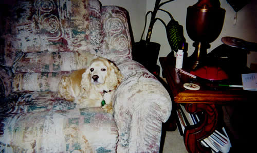
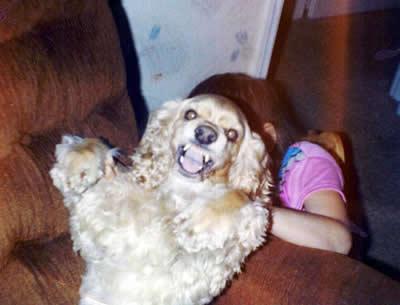

Welcome to Brandy's webpage where I have chosen to remember my dearly departed puppy. She lived from
February 6th, 1990 until June 14th, 2001. Because of conditions she acquired in old age, we were forced to put her to sleep. At her death, she was blind, deaf, and had bad back pains. Before all that sadness, though, she was a vibrant and wonderful dog, with a distinctive attitude and a heart of gold.
Since the first night my father brought her home to us, she was a vibrant and active dog. She kept us up all night running back in forth in our first house back in Lauderdale Lakes. I was a little punk to Brandy, though she was quick to keep me in line. My mom's first dog, Babe, would never think to bite me, no matter how much of a brat I was. Brandy, however, did not afford me such luxeries. Sure, I may have teased her, maybe even tried to push her around. Fortunately, she wasn't too nasty.

The last year of Brandy's life was possibly the most fulfilling for me. Because no one in my family really wanted to take care of the blind deaf dog, I took responsibility. I was only happy to. Each morning, I would wake up with Brandy snoozing silently (sometimes loudly...) at my side. I would creep up out of my bed, as to not wake her, and take my shower and get dressed. When I got back to my room, she would usually have outstretched her paws sniffing up in the air to make sure I knew that she was hungry and needed to go outside. I quickly got dressed and put shoes on and picked her up out of bed and took her downstairs outside and set her in a preordained spot in the grass. This would be so she would know where she was and would not get lost. I went inside the house and left the front door opened and made her can food for her. On an especially good day, Brandy would be able to find her way back to the front steps, climb all the way up the the kitchen, and make it to her food without my help. I would usually have to go outside though and get her and take her inside. I would try not to lead her right to her food as she was very protective of it and would growl if she knew anyone was near it. I usually just set her by the kitchen entrance and waited until she found her food. After she had finished, I took her into Mom's room and let her sleep with her the rest of the morning while I drove off to school

It was defiantly the best year I had with her...the above picture may not suggest that, I must admit... I really loved my sweet puppy Brandy. I hope that one day I will have a cocker spaniel half as fun as she was. I will never forget her and will enrich the lives of other pets with my continuing love for Brandy. May she rest in peace...